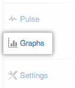
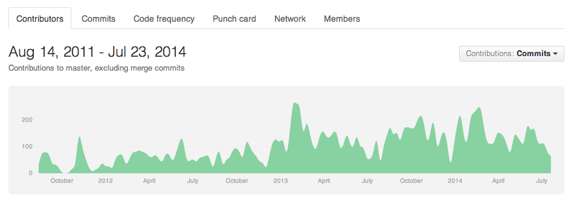
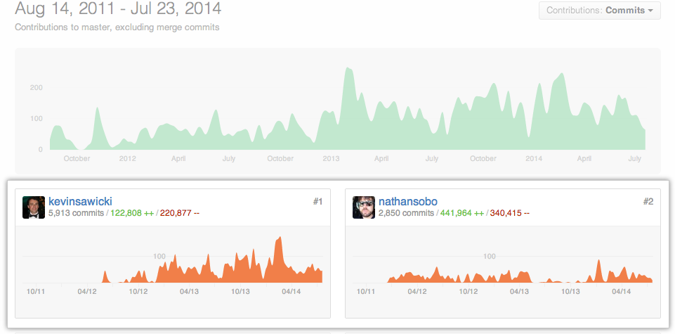
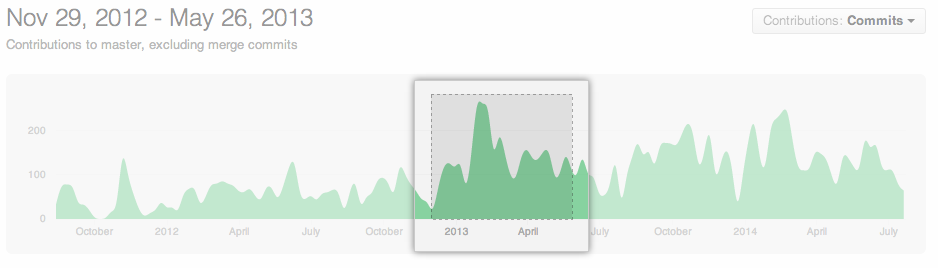
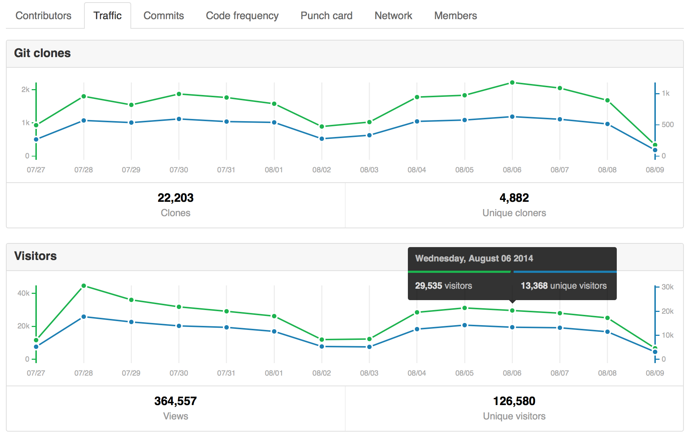
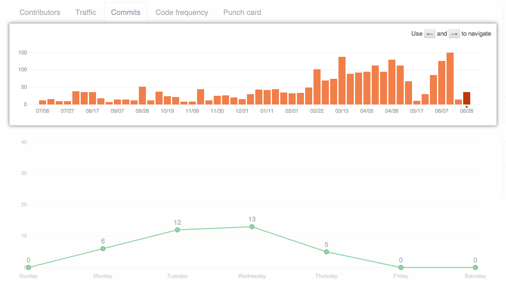
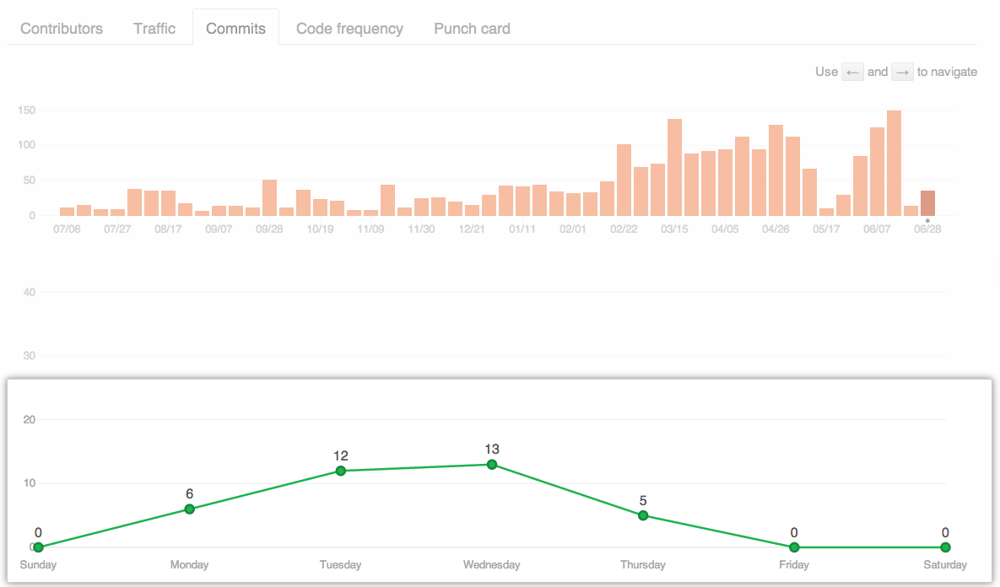
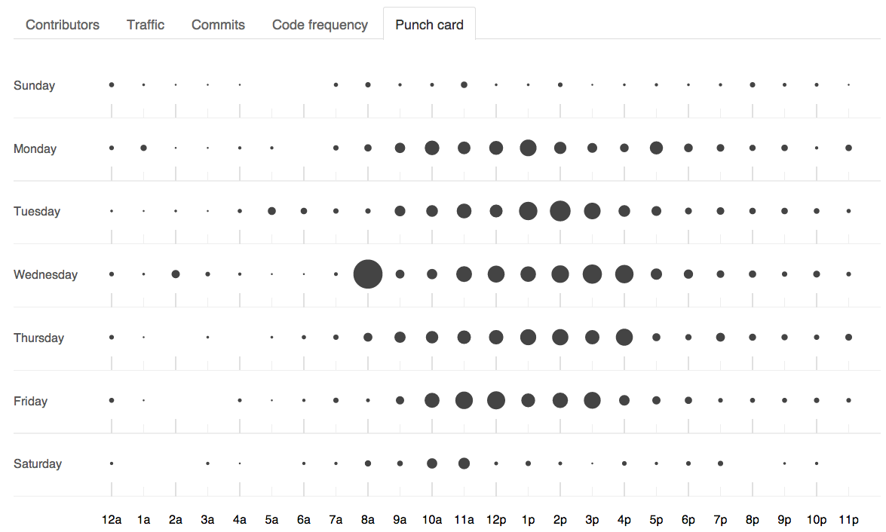
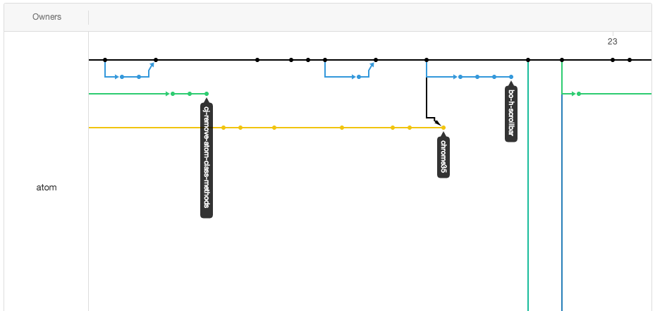
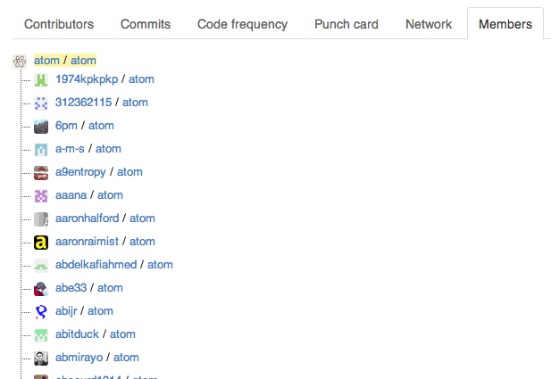

Every repository has graphs that display data about contributors, commits, and traffic.
Accessing repository graphs
To see graphs for a repository, navigate to the repository and click the Graphs tab on the right side of the page.

Contributors
The Contributors graph shows commits made by the top 100 contributors over the lifetime of your project.

Below the main graph, we display specific graphs for each contributor.

You can click and drag in the main graph to select a range of time over which to view contributors and commits.

If you've contributed to a project, but don't see yourself in the repository contributors graph, see "I don't see myself in the repository contributors graph" for troubleshooting help.
Traffic
The Traffic graph shows how many full git clones and web visitors your repository has had over the past 14 days. It also shows referring sites and popular content, ordered by views and unique visitors.
The git clones and web visitors graphs update hourly, while the referring sites and popular content sections update daily. Note that the traffic graphs uses the UTC+0 timezone, regardless of your location.
To see the exact numbers for a given day, hover over the point for that day on the graph.

Referring sites
The entries in the "Referring sites" section, excluding search engines and GitHub itself, are clickable links to the specific paths that the referral came from.
Popular content
The entries in the "Popular content" section link to the parts of the content that generated traffic.
Commits
The Commit Activity graph shows all commits made to your repository over the past year.
The top graph shows commits for the entire year by week.

The bottom graph shows the average number of commits by day of the week for the year.

Code frequency
The Code frequency graph uses the same information as the Commit activity graph, but shows the number of additions and deletions in the repository, rather than the total number of commits.
Punch card
The Punch card graph shows the frequency of updates to your repository based on day of week and time of day. The size of the black circle indicates commit frequency.

Network
The Network graph shows the branch history for the default branch of the repository. To see older branches, click and drag in the graph.

Members
The Members tab shows all forks of the repository.
